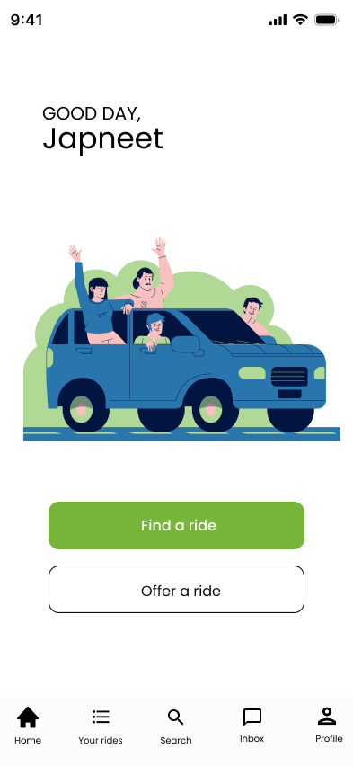
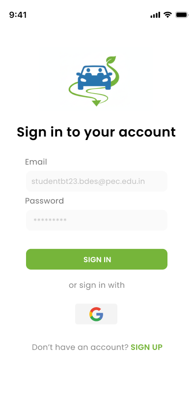
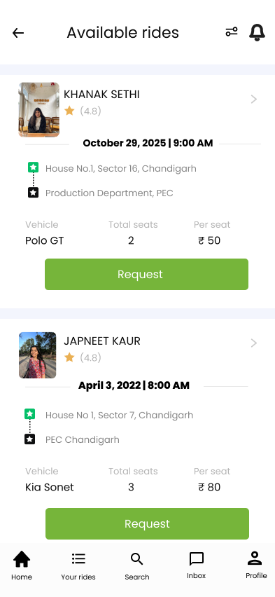

PECmate
“One campus, one ride.” A peer-to-peer carpooling app for Punjab Engineering College students, built around trust, repeat commuting and low-friction ride discovery.
Campus carpooling has a trust problem before it has a matching problem.
Students travelling to and from campus can face repeated fuel, parking and commuting costs, while open ridesharing platforms introduce a different concern: who is the person on the other side of the ride?
Make the campus itself the trust layer.
PECmate restricts onboarding to verified @pec.edu.in email addresses. Instead of building a separate identity-verification system, the concept uses an existing institutional boundary to establish who can enter the network.
That single decision shapes the rest of the experience: find a ride, see enough context to trust it, request it quickly.
Two jobs, one simple home screen.
Institutional email creates a closed network without a heavy verification flow.
Ride cards surface photo, name, rating, route, vehicle, seats and price before a request.
The find-ride flow keeps the repeat task compact: route, date and seats.
Offering a ride is treated as a structured task rather than a generic post.



A focused concept for a very specific community.
PECmate is intentionally scoped rather than positioned as a general ridesharing platform. Designing for one campus made it possible to make trust, repeated commuting and familiar routes part of the product logic from the beginning.